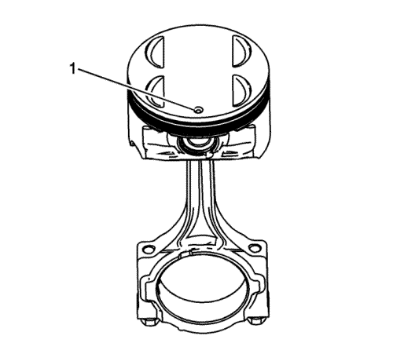
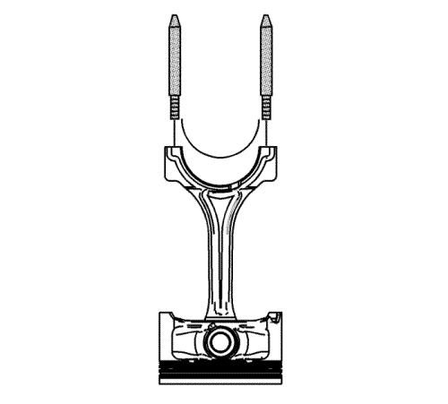
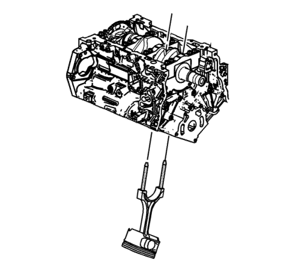
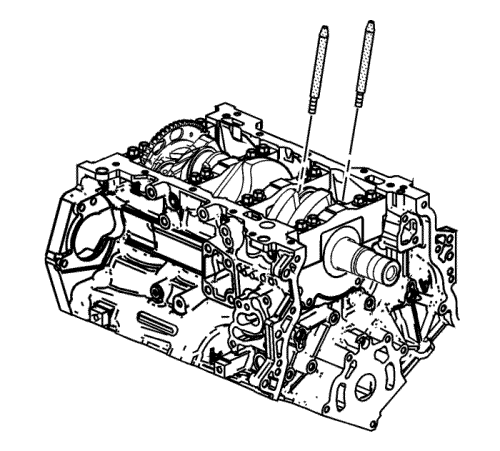
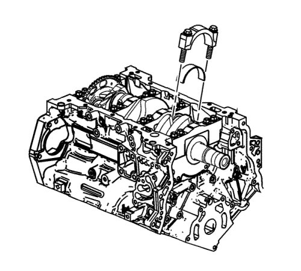
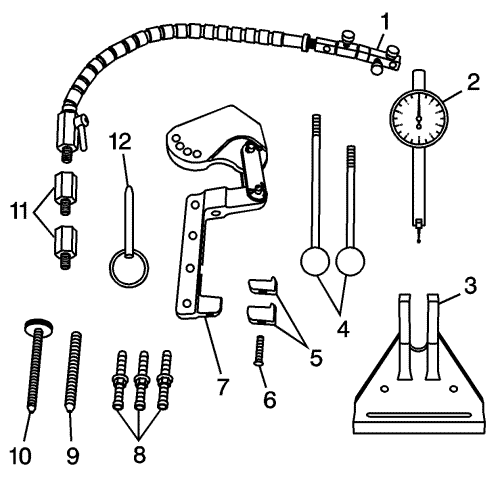
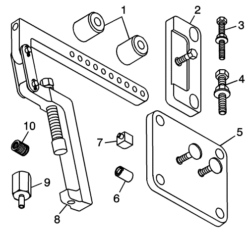
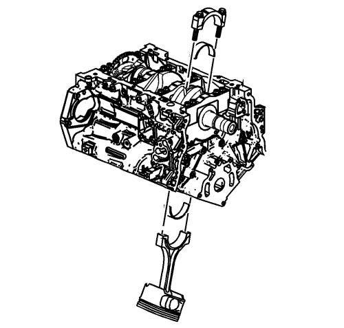

Montaje de pistón, biela y cojinete
Herramientas especiales
| • | EN 8037 Compresor de segmentos |
| • | EN 43690-A Herramienta de comprobación de la holgura del cojinete de biela |
| • | EN 45059 Medidor de ángulos |
| • | EN 46121 Juego de pasadores guía para bielas |
| • | EN 48589 Casquillo para girar el cigüeñal |
Si desea informarse sobre herramientas regionales equivalentes, consultar Herramientas especiales .
Procedimiento de armado del pistón y la biela

- Lubrique generosamente las paredes de los cilindros, los segmentos y las faldas de los pistones con aceite de motor.
Nota: El pistón es direccional y debe montarse en el bloque motor en la dirección adecuada. El punto en la parte superior del pistón debe estar dirigido a la parte delantera del motor.
- Seleccione el conjunto de pistón / biela con el número correcto para el cilindro. En la parte superior del pistón hay un punto (1) que indica la orientación correcta del mismo.

Nota: Si los cojinetes de varilla de unión se han utilizado en un motor en funcionamiento, debe sustituirlos por NUEVOS cojinetes de varilla de unión para el nuevo montaje.
- Monte el cojinete de la biela en la misma.
- Monte el pasador EN 46121 en los orificios de tornillos de la biela.
- Comprima los segmentos con el compresor EN 8037 o equivalente.

Nota: Al montar el pistón y la biela, debe tenerse mucho cuidado para no rascar ni mellar el cilindro, las boquillas de aceite ni las superficies del cigüeñal.
- Usando ambas manos, guíe lentamente el conjunto de pistón y biela en el cilindro desde la parte superior e inferior del cilindro. NO deje que la biela entre en contacto con la pared del cilindro.
- Cuando el compresor EN 8037 entre en contacto con la superficie del bloque, inserte el pistón en el cilindro golpeándolo suavemente con el mango de un martillo. Guíe la biela en el muñón de cojinete del cigüeñal usando el pasador EN 46121 mientras inserta el pistón en el cilindro golpeándolo suavemente con un martillo blando.

- Desmonte el pasador EN 46121 de los orificios de tornillos de la biela.
Procedimiento de medición de la holgura del cojinete de biela - usando hilo plástico
Nota: Los cojinetes de biela que hayan sido usados en un motor NUNCA deben reutilizarse.
Antes del montaje final, es importante comprobar la holgura de los nuevos cojinetes de biela.
- Coloque una tira de hilo plástico deformable (Plastigage), a temperatura ambiente, a lo largo del muñón del cojinete de biela.
- Monte el cojinete de la biela en el sombrerete de la biela.
Nota: La biela no tiene una dirección predeterminada, por eso las lengüetas de bloqueo del cojinete de biela pueden mirar hacia dentro o hacia fuera.
- Monte el sombrerete del extremo de la biela en su biela original y asegúrese de que las lengüetas de bloqueo del cojinete estén alineadas en el mismo lado de la biela.
Precaución: Consulte Precaución con las fijaciones en la sección Prólogo

Atención: No lubrique los tornillos NUEVOS de la varilla de unión. Los tornillos NUEVOS tienen un lubricante de grafito preaplicado. La aplicación de lubricante en los tornillos de la varilla de unión puede afectar a la carga de apriete cuando se aprieten los tornillos de la varilla de unión. Una carga de apriete inadecuada puede provocar el fallo de alguno de los componentes y averías graves en el motor.
Nota: Reutilice los tornillos antiguos de la biela SÓLO para medir la holgura del cojinete de biela.
- Coloque los tornillos de la biela en el sombrerete de biela y apriételos a 30 N·m (22 lib. pie).
- Afloje los tornillos de la biela hasta que la lectura del par sea cero.
- Vuelva a apretar los tornillos de la biela.
Apriete los tornillos de la biela a 25 N·m (18 lib. pie).
Apriete los tornillos de la biela otros 110 grados mediante el medidor EN 45059.
- Deje que el conjunto se asiente durante al menos 2 minutos.
- Extraiga los tornillos de la caperuza de la biela.
- Desmonte el sombrerete de biela.

- Determine la holgura del cojinete de biela comparando la anchura del hilo de plástico aplastado en el punto más ancho con la graduación en la regla del envase del material plástico.
- Compare sus mediciones con las especificaciones mecánicas del motor. Si los nuevos cojinetes no ofrecen la holgura correcta entre el cigüeñal y el cojinete de biela, compruebe lo siguiente:
| 11.1. | Vuelva a medir si los muñones del cigüeñal para los cojinetes de biela tienen la medida correcta especificada y asegúrese de que los cojinetes nuevos montados son correctos. Si los muñones son de un tamaño incorrecto, sustituya o rectifique el cigüeñal. Está permitido rectificar el cigüeñal, y están disponibles cojinetes de menor tamaño. |
| 11.2. | Vuelva a medir el diámetro del orificio del cojinete de biela para asegurarse de que el tamaño es correcto. La biela no se puede mecanizar; si no cumple las especificaciones, debe sustituirse. |
- Limpie el material de plástico de los muñones de los cojinetes de biela con un paño suave que no suelte pelusas.
Procedimiento de medición de la holgura del cojinete de biela - usando EN 43690-A
La herramienta de comprobación EN 43690-A se ha desarrollado como método más preciso para medir las holguras del cojinete de biela. Las instrucciones siguientes ofrecen un resumen de la configuración y uso de la herramienta. Para obtener información más detallada, consulte las instrucciones de la herramienta suministradas por el fabricante de la misma.

EN 43690-A Herramienta de comprobación
| • | EN 43690-20 Base giratoria (1) |
| • | EN 43690-19 Indicador de cuadrante (2) |
| • | EN 43690-5, -6 Mango (4) |
| • | EN 43690-10, -11 Pie (5) |
| • | EN 43690-1 Conjunto de brazo giratorio (7) |
| • | EN 43690-3, -7, -8 Tornillos (8) |
| • | EN 43690-17, -18 Adaptador (11) |

EN 43690-A Kit adaptador
| • | EN 43690-104 Distanciador (1) |
| • | EN 43690-105 Placa de sujeción (2) |
| • | EN 43690-106 Placa de sujeción (5) |
| • | EN 43690-101 Conjunto de brazo giratorio (8) |
| • | EN 43690-103 Adaptador (9) |
Nota: Los cojinetes de biela que hayan sido usados en un motor NUNCA deben reutilizarse.
Antes del montaje final, es importante comprobar la holgura de los nuevos cojinetes de biela.
- Monte el cojinete de la biela en el sombrerete de la biela.
Nota: La biela no tiene una dirección predeterminada, por eso las lengüetas de bloqueo del cojinete de biela pueden mirar hacia dentro o hacia fuera.
- Monte el sombrerete del extremo de la biela en su biela original y asegúrese de que las lengüetas de bloqueo del cojinete estén alineadas en el mismo lado de la biela.
Precaución: Consulte Precaución con las fijaciones en la sección Prólogo
Atención: No lubrique los tornillos NUEVOS de la varilla de unión. Los tornillos NUEVOS tienen un lubricante de grafito preaplicado. La aplicación de lubricante en los tornillos de la varilla de unión puede afectar a la carga de apriete cuando se aprieten los tornillos de la varilla de unión. Una carga de apriete inadecuada puede provocar el fallo de alguno de los componentes y averías graves en el motor.
Nota: Reutilice los tornillos antiguos de la biela SÓLO para medir la holgura del cojinete de biela.
- Coloque los tornillos de la biela en el sombrerete de biela y apriételos a 30 N·m (22 lib. pie).
- Afloje los tornillos de la biela hasta que la lectura del par sea cero.
- Vuelva a apretar los tornillos de la biela.
Apriete los tornillos de la biela a 25 N·m (18 lib. pie).
Apriete los tornillos de la biela otros 110 grados mediante el medidor EN 45059.
- Gire el cigüeñal hasta que el muñón del cigüeñal y la biela que van a medirse estén en la posición de las 12 en punto.
Nota: El cigüeñal debe estar seguro, sin movimiento ni rotación, para obtener una lectura precisa.
- Desmonte los tornillos de bancada del cigüeñal necesarios para montar la placa de sujeción EN 43690-105.
Nota: No permita que el tornillo de la placa de sujeción EN 43690-105 entre en contacto con el anillo reluctor.
- Monte EN 43690-105 y los tornillos de bancada del cigüeñal.
- Afloje los tornillos de la biela hasta que la lectura del par sea cero.
- Vuelva a apretar los tornillos de la biela.
Apriete los tornillos de la biela a 25 N·m (18 lib. pie).
Apriete los tornillos de la biela otros 110 grados mediante el medidor EN 45059.
- Durante y después del montaje, asegúrese de que cada pistón esté debidamente colocado en el cilindro correcto. La flecha de posición en la parte superior de cada pistón debe señalar hacia la parte delantera del motor.
- Repita estos procedimientos con los conjuntos de pistón / biela restantes usando la llave EN-48589 para girar el cigüeñal.
Procedimiento de armado final del pistón y la biela
- Aleje la biela del muñón del cigüeñal para poder lubricar el muñón del cojinete de biela del cigüeñal.
- Aplique una cantidad generosa de prelubricante del cigüeñal o aceite de motor limpio en el muñón del cojinete de biela del cigüeñal. Consulte Adhesivos, líquidos, lubricantes y selladores para el lubricante recomendado.
- Guíe la biela hacia el muñón de biela del cigüeñal.
- Monte el sombrerete del extremo de la biela en su biela original y asegúrese de que las lengüetas de bloqueo del cojinete estén alineadas en el mismo lado de la biela.

Atención: No lubrique los tornillos NUEVOS de la varilla de unión. Los tornillos NUEVOS tienen un lubricante de grafito preaplicado. La aplicación de lubricante en los tornillos de la varilla de unión puede afectar a la carga de apriete cuando se aprieten los tornillos de la varilla de unión. Una carga de apriete inadecuada puede provocar el fallo de alguno de los componentes y averías graves en el motor.
Nota: NO reutilice los tornillos antiguos de la biela.
- Coloque los NUEVOS tornillos de la biela en el sombrerete de biela y apriételos a 30 N·m (22 lib. pie).
- Afloje los tornillos de la biela hasta que la lectura del par sea cero.
- Vuelva a apretar los tornillos de la biela.
Apriete los tornillos de la biela a 25 N·m (18 lib. pie).
Apriete los tornillos de la biela otros 110 grados mediante el medidor EN 45059.
- Durante y después del montaje, asegúrese de que cada pistón esté debidamente colocado en el cilindro correcto. La flecha de posición en la parte superior de cada pistón debe señalar hacia la parte delantera del motor.
- Repita estos procedimientos con los conjuntos de pistón / biela restantes usando el medidor EN 45059 para girar el cigüeñal.
| © Copyright Chevrolet Europe. All rights reserved |